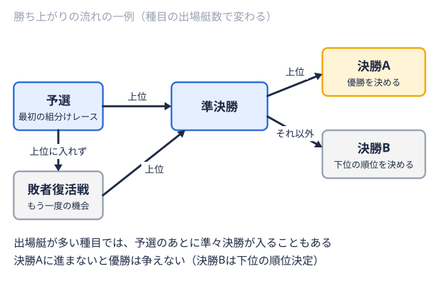
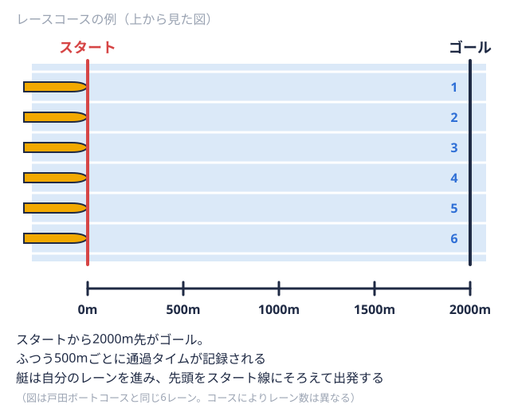

種目・用語解説 2026-11-13
ボート競技（ローイング）のルール改正｜競漕規則の2023・2024年改定と部員が押さえたい変更点
「ボート競技のルールが変わったと聞いたけれど、何がどう変わったのか分からない」「先輩から聞いていた話と、今の大会での扱いが違う気がする」。そんな疑問を持つ現役部員やマネージャーは少なくないと思います。国内のボート（ローイング）の大会は、日本ローイング協会（JARA）の「競漕規則・細則」に基づいて運営されており、この規則は毎年のように見直しが重ねられています。
この記事では、JARAが公開している新旧対照表（2023年4月版・2024年4月版）と、2026年度の全日本大学ローイング選手権向けに公開されている審判上の注意を一次資料として、直近のルール改正の流れと、大学の大会で実際に効いてくる規定を整理します。競技の基本ルールそのもの（種目・コース・用語）はボート競技（ローイング）のルールを初心者向けに解説で扱っていますので、本記事は「何が変わったか」に絞ります。
なお、規則の条文は改定されることがあります。大会に出る前には、必ず当該大会の大会要項とJARAの最新の規則を確認してください。
結論：直近の大きな改定は2023年4月版と2024年4月版
編集部がJARAの公開資料を確認できた範囲では、競漕規則・細則の最新版は2024年4月1日に発効したものです（2024年4月1日より発効する競漕規則と関連資料）。2026年度の全日本大学ローイング選手権向けの審判注意事項（レースに当たっての審判上の注意）も、冒頭で「競漕規則（2024年4月改訂）」に基づいてレースを運営すると明記しています。2025年4月付けで競漕規則本体が改正されたという資料は、確認できませんでした。
大まかな流れは次のとおりです。
| 発効時期 | 主な内容 | 性格 |
|---|---|---|
| 2023年4月 | 艇・装備の安全規定の整理、ブレードオールの先にある、水に入って水をとらえる、平たい形をした部分。 の統一範囲の明確化、電子機器の扱いの一本化、異議申立・不服申立の手順の整理、着順判定の見直しなど の統一範囲の明確化、電子機器の扱いの一本化、異議申立・不服申立の手順の整理、着順判定の見直しなど | 運用面の整理が中心 |
| 2024年4月 | 日本ボート協会から日本ローイング協会への名称変更に伴う表記変更、予選最初に行う組分けのレース。上位の艇が次のラウンドに進む。  の組合せ方式の追加、プログレッションシステムの採用、ジェンダー問題検討パネルの設置など | 名称変更と大会運営の仕組みの追加 |
以下、それぞれの中身を見ていきます。
ボート競技のルールはどこで決まっているのか
まず、ルールの階層を整理しておきます。
- 国際ルール：国際ローイング連盟（World Rowing）の競技規則
- 国内の規則：JARAの「競漕規則・細則」。第1条の目的・精神で、World Rowingのルールを踏まえた規則や慣習を、できる限り国内の大会でも準拠・採用するとしています
- 大会ごとの取り決め：大会要項、代表者会議での指示
競漕規則の第3条（適用範囲）は、JARA主催・共催・主管の国内大会は原則としてこの規則に基づくと定めています。ただし、水域の自然環境や設備などの制約、あるいは大会の目的によって規則をそのまま適用できない場合は、基準を緩和または適用除外にでき、その際は大会要項に明記して周知するとされています（2023年4月版で「大会の目的によって」の文言が加わっています）。
つまり、同じ「ボートのルール」でも、国際大会・全日本選手権・普及を目的とした大会では細部が違う場合があります。「去年の大会ではこうだった」という記憶だけに頼らず、毎回その大会の要項を読む習慣が大切です。
2023年4月版の主な改定ポイント
2023年4月版の新旧対照表は、2022年4月1日発効の規則を改定前として比較しています（新旧対照表・改定理由等（2023年4月版））。部員に関係が深い箇所を取り上げます。
艇と装備の安全性（第10条）
第10条は、すべての艇と装備が満たすべき安全条件を定めています。たとえば、艇首に直径4cm以上の白いボール（バウボール）を付けること、漕手オールを持って艇を前に進める選手。舵を取るだけの人は含めない。 が緊急時にすぐ艇から離脱できるクイックリリース型のフットストレッチャーであること、コックスシートの開口部の寸法、オールのブレード厚の下限などです。
が緊急時にすぐ艇から離脱できるクイックリリース型のフットストレッチャーであること、コックスシートの開口部の寸法、オールのブレード厚の下限などです。
2023年4月版では、フットストレッチャーに関する罰則の「適用猶予」を定めていた細則が削除されました。改定理由には、クイックリリース型のフットストレッチャーがすでに全国に普及し、競技者と指導者の双方が安全のために当然そうすべきだと認識していることが、安全環境委員会の調査などで確認できたため、猶予はもう必要ない、と書かれています。また、規定を守ることはクルー1つの艇に乗る全員のまとまり。レースに出る単位にもなる。と所属団体の責任であり、役員・審判の是正の指示に従わずに違反した艇で出漕した場合は、失格までの罰則があるとされています。
艇を点検する立場のマネージャーや、備品を管理する部員にとっては、「出艇前の安全確認は大会の規則上も重い」という点が重要です。
ブレードの統一範囲（第31条）
オールのブレードは、クルー内でカラー・デザイン・マークを統一する必要があります。2023年4月版では、この「統一の対象」が明確になりました。題記が「ブレードカラー、デザイン、マークの統一」となり、細則で「オールのメーカーはクルー内統一の対象としない」と書かれました。改定理由には、ブレードの形状（ボルテックスの有無など）は統一の対象ではなく、これはWorld Rowingの規定に準拠したものだと説明されています。
電子機器の扱い（第63条・第64条）
旧規則の第63条には、レースに出る艇内に無線通信機や携帯電話などの通信機器を持ち込むことを禁じる号がありました。2023年4月版ではこの号が削除され、通信機器の扱いが第64条に一本化されました。理由は、スマートフォンやスマートウォッチなどが多機能化し、第64条で許可されている「許可データ」を収集する機能も持つようになったため、持ち込み自体を一切禁じる規定が第64条と矛盾するからだとされています。
第64条の考え方は次のとおりです。
- レース中（レース用の航行ルールが適用されている全時間帯）は、電気的・電子的な手段によるクルーと艇外との交信やデータの送受信は一切できない
- 艇内で計測・記録・保存できるデータは、タイム、ストロークレート、艇速／加速度、心拍数の4種類（許可データ）に限られる
- 違反したクルーは失格になることがある
「持ち込めるか」ではなく「レース中に外部と通信しないか、許可データ以外を記録しないか」で判断する規定に整理された、と理解すると分かりやすくなります。
異議申立・不服申立の手順（第18条・第42条・第74条・第75条）
審判の判断に納得できない場合の手続きも整理されました。大きな特徴は次の点です。
- スタートでイエローカードまたはレッドカードを受けたクルーは、その場で主審または発艇員に直接異議を申し立てられる（第42条）。申立が棄却または却下された場合は、第75条の不服申立に進める
- レースに関する異議は、主審が白旗を掲げる前に挙手などで主審に申し出る（第74条）
- レース後のクールダウンや次のラウンドまでの練習中の違反への処分に対する異議は、処分した審判に申し立てられる。できない場合は最寄りの審判に、次のラウンドで桟橋を離れるまでに申し立てる
- 不服申立は、決定の告知後1時間以内に、所属団体の代表者または代理人の署名がある文書で、審判資格を持つ3名で構成する不服審査委員会に行う。費用はかからない（第75条）
改定理由では、時間が経つと事実関係が分からなくなるため、異議はその場で即座に申し立てることとした、と説明されています。不服申立の文書は、用紙の種類やレイアウトを問わず、状況の説明、根拠となる規則の条文、所属団体代表者の署名と提出日が書かれていればよいとされています。
着順判定と、特定のクルーの停止（第48条・第56条）
複数の艇が僅差でフィニッシュ漕ぎの終わりの局面。水を押し終えてオールが水面から出る直後。ゴールの意味でも使う。 する場合は、フォトフィニッシュの画像で着順を判定することが細則に明記されました。目視で着順を判定した場合は手動計時のタイムが、フォトフィニッシュの場合はその画像上のタイムが公式タイムです。
する場合は、フォトフィニッシュの画像で着順を判定することが細則に明記されました。目視で着順を判定した場合は手動計時のタイムが、フォトフィニッシュの場合はその画像上のタイムが公式タイムです。
また、レース中に特定の艇が自分のレーンレースで各艇に割り当てられる、水上の自分専用の走路。艇ごとに番号が付いている。 
2024年4月版の主な改定ポイント
2024年4月版の新旧対照表は、2023年4月版を改正前として比較しています（新旧対照表及び改正理由（2024年4月1日発効））。
「ボート」から「ローイング」への表記変更
もっとも広範囲に及ぶ変更は表記です。日本ボート協会から日本ローイング協会への名称変更に伴い、スポーツの名称としての「ボート」「ボート競技」が「ローイング」に置き換えられました。大会名の表記にも反映されています。細則の大会一覧には、全日本ローイング選手権大会、全日本大学ローイング選手権大会、全日本社会人ローイング選手権大会、全日本新人ローイング選手権大会、全国高等学校選抜ローイング大会が並びます。国民体育大会は、2024年から国民スポーツ大会に名称が変わるため、「国民スポーツ大会ローイング競技」と記載されています。
このサイトの「全日本大学ローイング選手権」も、現在の正式な呼び方に沿った表記です。過去の年度の結果ページ（例：2025年度の結果）を見るときは、年度によって大会名の表記が異なる場合がある点に気をつけてください。
予選の組合せ方式の追加（第15条）
予選の組合せ方式に、次の2つが加わりました。
- 予選の前日に、大会が行われるコースでタイムトライアルを行い、そのタイムをもとに組合せを決める
- 事前に提出された公式エルゴメーター陸の上で漕ぐ動作を再現するトレーニング機器。タイムの計測にも使う。記録をもとに組合せを決める
改定理由は、予選の特定の組に強いクルーが集まるのを防ぐためです。また、全日本ローイング選手権大会の組合せは、原則としてプログレッションシステム（着順によって次のラウンドの組合せを決める方式）に基づいて決めることが細則に明記されました。これはWorld Rowingのプログレッションシステムに準拠したものとされています。どの方式を使うかは、あらかじめ大会要項で公表される方式に従います。
ジェンダーに関する問題への対応（第21条）
競技者資格の充足に関する第21条に、漕手のジェンダーに関する問題はJARAが設置する専門家組織「ジェンダー問題検討パネル」の審議結果に基づき、理事会が決定するという項目が加わりました。改定理由には、World Rowingの「Gender Advisory Panel」に倣った組織であると書かれています。
パーソナルアイテムの定義の明示（第30条）
ユニフォームのクルー内統一に関する細則で、「パーソナルアイテムは統一されている必要はない」という規定に、定義の根拠となる「別表1 定義等一覧表」への参照が加わりました。
今年の大学選手権で現場に効くルール
ここまでは改定の流れでしたが、実際に出漕する部員にとっては「今の大会で何を守るか」が大切です。2026年度の全日本大学ローイング選手権向けの審判上の注意から、特に関係が深い項目を抜き出します。
舵手（コックス）の計量
- 計量はユニフォームと、装着が認められているパーソナルアイテムのみで行う
- 舵手艇に乗って舵を操作し、漕ぐ人に声で指示を出す人。自分ではオールを持たない。の体重は、男子種目55kg以上、女子種目50kg以上。満たない場合は最大15kgのデッドウェイトを、艇内で舵手にもっとも近い場所に置く。携行せずに出漕するとレッドカードで除外になる
- 計量はレースのある日に1回、最初に出漕するレースの2時間前から1時間前までに行う。時間内に計量しなかったクルーは失格になる
- 計量所での水分摂取は禁止。予備計量は1回限り認められる
コックスの役割や向いている人は大学ボート部のコックスとはで詳しく紹介しています。
艇の最小重量
艇には種目ごとの最小重量があります。注意事項に記載された値は、1x1人乗りの艇。1人が左右2本のオールを持つ。種目コードは「1x」。 が14kg、2x2人乗りの艇。2人とも左右2本のオールを持つ。種目コードは「2x」。と2-2人乗りで、1人1本のオールを持つ艇。舵を取る人が乗る型もある。が27kg、2+が32kg、4x4人乗りで、全員が左右2本のオールを持つ艇。種目コードは「4x」。が52kg、4-4人乗りで、1人1本のオールを持つ艇。舵を取る人が乗る型もある。が50kg、4+が51kg、4x+が53kg、8+漕ぐ人8人と舵を取る人1人が乗る最大級の艇。1人1本のオールを持つ。が96kgです。計量で不足が判明した場合は当該レースの最下位（BUW）となり、同じ大会中に2度目の不足が判明すると失格です。計量を指示された後に艇内に水を入れるなど故意に影響を与える行為をした場合も、最下位となります。
が14kg、2x2人乗りの艇。2人とも左右2本のオールを持つ。種目コードは「2x」。と2-2人乗りで、1人1本のオールを持つ艇。舵を取る人が乗る型もある。が27kg、2+が32kg、4x4人乗りで、全員が左右2本のオールを持つ艇。種目コードは「4x」。が52kg、4-4人乗りで、1人1本のオールを持つ艇。舵を取る人が乗る型もある。が50kg、4+が51kg、4x+が53kg、8+漕ぐ人8人と舵を取る人1人が乗る最大級の艇。1人1本のオールを持つ。が96kgです。計量で不足が判明した場合は当該レースの最下位（BUW）となり、同じ大会中に2度目の不足が判明すると失格です。計量を指示された後に艇内に水を入れるなど故意に影響を与える行為をした場合も、最下位となります。
種目ごとの違いは、このサイトのエイトの種目ページなどで歴代の優勝校を確認しながら、どんな艇で競われているのかをイメージすると理解しやすくなります。
イエローカードとレッドカード
- イエローカードは警告。同一ラウンド内で2回受けると、レッドカードの警告になる
- イエローカードは前のラウンドの終了から次のラウンドの終了まで有効
- レッドカードの警告を受けると除外となり、その後のレースには出漕できない
- 発艇定刻の2分前までに所定の位置に着けないと、イエローカードの警告を受ける
航行ルールの違反（回漕レーンでの速度超過、待機水域以外での待機、練習エリアのルール違反）もイエローカードの対象です。艇の故障が出艇前や回漕中に起きた場合は、すぐに最寄りの審判に申し出ることが求められています。
無線通信機器と異議申立
許可データ（タイム、ストロークレート、艇速／加速度、心拍数）を集める機器の持ち込みは許可されますが、レース中にクルーと艇外との間で交信やデータの送受信を行うと失格です。岸から拡声器や無線で指示を出すことも禁止されています。
異議は、レース直後または審判から処分を受けた時点でのみ、その審判に申し出られます。先に紹介した2023年4月版の改定が、運用の細部にまで反映されていることが分かります。
部員・マネージャーが規則を確認するときの進め方
規則は条文が多く、すべてを読み込むのは負担です。次の順番で確認すると、必要な部分に早くたどり着けます。
- 大会要項を読む：組合せ方式、計量の時刻、出漕申込の期限など、その大会に固有の取り決めはここに書かれています
- 審判上の注意を読む：代表者会議の前に、コックスの計量、カードの扱い、艇の重量、通信機器などの現場ルールをまとめて確認できます
- 新旧対照表で改定点を確認する：先輩から聞いた話と違うときは、改定理由まで書かれた新旧対照表で、いつ何が変わったかをたどれます
- 疑問は部内で共有する：コックスの計量、艇の重量、ユニフォームの統一などは、マネージャーと主将、コックスで事前に確認しておくと当日の混乱を減らせます
大会の年間の流れは大学ボート部の1年間のスケジュール、インカレそのものの見どころはインカレボートの観戦ガイドにまとめています。
まとめ
- 国内のボート（ローイング）の大会は、JARAの競漕規則・細則に基づいて運営される。編集部が確認できた最新版は、2024年4月1日発効のもの
- 2023年4月版は、安全規定、ブレード統一の範囲、電子機器の扱い、異議・不服申立、着順判定などの運用面を整理した
- 2024年4月版は、名称変更に伴う「ローイング」表記への統一に加え、予選の組合せ方式の追加、プログレッションシステムの明記、ジェンダー問題検討パネルの設置などを行った
- 実際に出漕する大会では、大会要項と審判上の注意に、コックスの計量、艇の重量、カードの扱い、通信機器などの具体的な決まりが書かれている
新しい年度が始まる前や大会の前には、一次資料に当たって確認し直すことをおすすめします。
出典
- 日本ローイング協会「2024年4月1日より発効する競漕規則と関連資料」（2024年1月25日掲載）
- 日本ローイング協会「競漕規則・細則 新旧対照表・改定理由等（2023年4月版）」
- 日本ローイング協会「競漕規則・細則 新旧対照表及び改正理由（2024年4月1日発効）」
- 日本ローイング協会「レースに当たっての審判上の注意（2026年度全日本大学ローイング選手権）」
この部活・競技を応援したい方へ
取材してほしい部活を募集中
オフシーズン・引退後に、長期インターンという選択
部活で培った力を実務で試す。16タイプ診断（30秒）で合う企業がわかります。